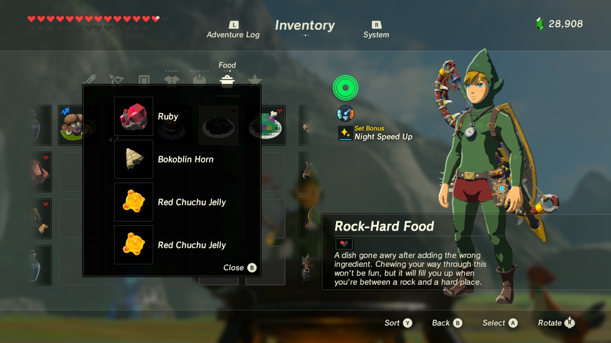

Rock-Hard Food
This is the handsome cousin of the Dubious Food dish. It is believed to be made from a mistake Link did when he was trying to cook something else.
However, I don't think this was a mistake, but maybe the birth of something else. Something that has both beauty and inedible metals in it. Chewing your way through this won't be fun,
but it will full you up when you're between a rock and a hard place.
Ingredients
The recipe for this dish is very straightforward and simple, but also expensive and dangerous. Remember to wear your proper PPE when handling rare metals and volatile ingredients.
For this recipe you will need:

- The biggest Ruby you can find. Preferably a ruby of 99.99 carats or more.
- A bokoblin horn. If you followed along the dubious food recipe, you should have one already. If you didn't add it to your dish that is...
- Two Red Chuchu Jellies. Be extremely careful since these can explode at any moment and ruin our kitchen.
- Proper PPE. Remember that at the end of the day, even though we don't like wearing it, it is necessary so that we come back home safely. To be able to care for others, one has to take care of themselves too.
Now that we have all of our inedible ingredients. Let's assemble this dish.
Recipe Instructions
- Grab your bokoblin horn and start pounding your ruby with it. If the ruby breaks, it means that it is fake and should be replaced immediately.
- When you are certain that you have a pure ruby, throw that bad boy into a boiling pot, and wait until toxic fumes starts coming out of it.
- Grab your two chuchu jellies. To get the most flavor out of them we will need to perform an eccentric technique.
- Bounce your chuchu jellies on the floor like a basket ball and perform a perfect score on the pot. You should do this with one jellie at a time.
- If done succesfully, the jellies should not explode and the heat from the jellies will transform our beautiful ruby into a piece of charcoal with a lot of flavor.
- Enjoy!
Take me back home